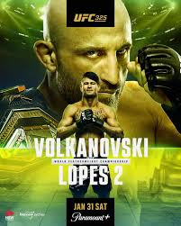

UFC 325 took place in Sydney, Australia, and was headlined by a featherweight title rematch between Alexander Volkanovski and Diego Lopes. Fighting in front of a home crowd, Volkanovski delivered a composed and technical performance, using his footwork, timing, and fight IQ to control the pace over five rounds. Lopes had moments of success, but Volkanovski consistently shut down his offense and went on to win by unanimous decision, successfully retaining his featherweight championship and further cementing his legacy in the division. In the co-main event, rising contender Benoît Saint-Denis made a statement by overwhelming Dan Hooker with relentless offense and securing a second-round TKO, showing that he’s ready for bigger opportunities in the lightweight division. Mauricio Ruffy vs. Rafael Fiziev was a striking showcase, with Ruffy landing clean combinations and scoring a second-round TKO in one of the night’s most impressive performances. Tallison Teixeira vs. Tai Tuivasa featured clinch work and control from Teixeira, who survived late pressure to earn a unanimous decision win. Quillan Salkilld vs. Jamie Mullarkey ended quickly, as Salkilld locked up a first-round submission, giving the crowd an early highlight. Billy Elekana vs. Junior Tafa saw Elekana turn the fight around on the ground, securing a second-round rear-naked choke. Cam Rowston vs. Cody Brundage was a high paaced fight that ended with Rowston finishing Brundage via second-round TKO. Jacob Malkoun vs. Torrez Finney played out as a grinding contest, with Malkoun controlling the exchanges and earning a unanimous decision. Jonathan Micallef vs. Oban Elliott ended in round two when Micallef secured a tight choke for the submission victory. Kaan Ofli vs. Yi Zha was a close, tactical matchup that went the distance, with Ofli edging out a majority decision. Dom Mar Fan vs. Sangwook Kim, the Road to UFC lightweight final, saw Fan deliver a composed performance to win by unanimous decision and secure his contract. Keiichiro Nakamura vs. Sebastian Szalay delivered a dramatic finish, as Nakamura landed a crushing knee for a third-round TKO to win the featherweight Road to UFC final. Lawrence Lui vs. Sulang Rangbo capped off the Road to UFC finals, with Lui taking a hard-fought split decision victory.

© 2026 Project MMA:
Visit the News page for more information on UFC 325 For any additional information contact Project MMA